I founded Espresso Tempo, a music production studio, in 2020. It has released 11 albums. I composed the music and designed the identity, the covers, the liner notes, the ads and the merch.
EP 7 includes “Interactive,” the theme song for The Future Is Ow. EP 11 is the soundtrack to Into The Ether With Kid Nicoleman.
Listen on Spotify · Apple Music · YouTube · espressotempo.com
Albums
Click a cover to play a 30-second sample.
-
EP 1 Feel Good Lofi
Apple Music -
EP 2 Relaxing Synth
Apple Music -
EP 3 Late Night Beats
Apple Music -
EP 4 Relaxing Piano
Apple Music -
EP 5 Jazz Beats
Apple Music -
EP 6 Music For Flying
Apple Music -
EP 7 Springtime Jazzhop
Apple Music -
EP 8 Acoustic Summer
Apple Music -
9 PE Nmutua Stab
Apple Music -
EP 10 Going Up
Apple Music -
EP 11 The Music Of Into The Ether With Kid Nicoleman, Vol. 1
Apple Music
Liner Notes
A banner for each album with where it was recorded, the instruments and the composer. Each was posted as three Instagram tiles.
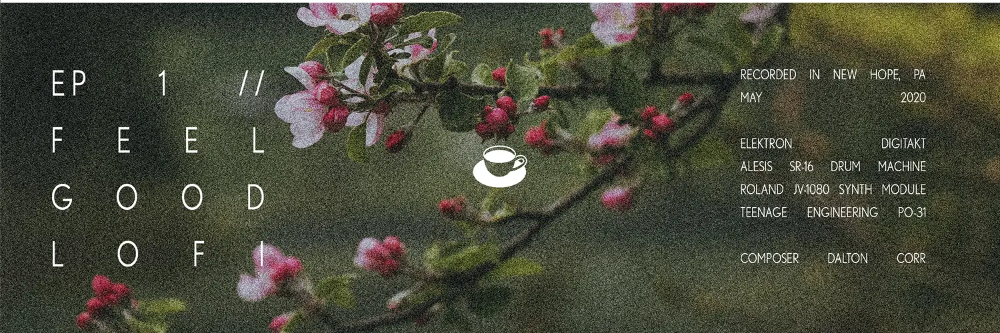
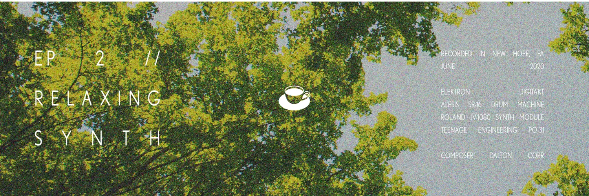
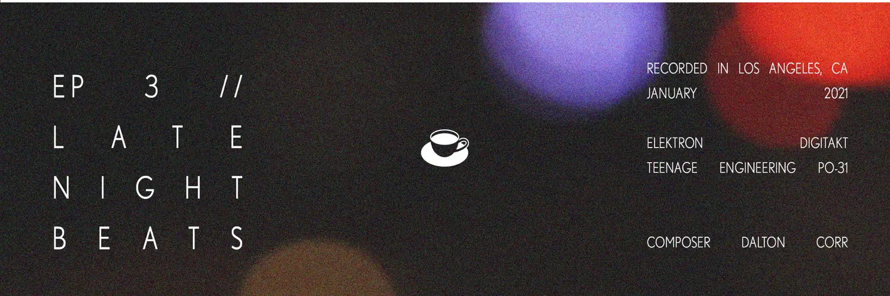
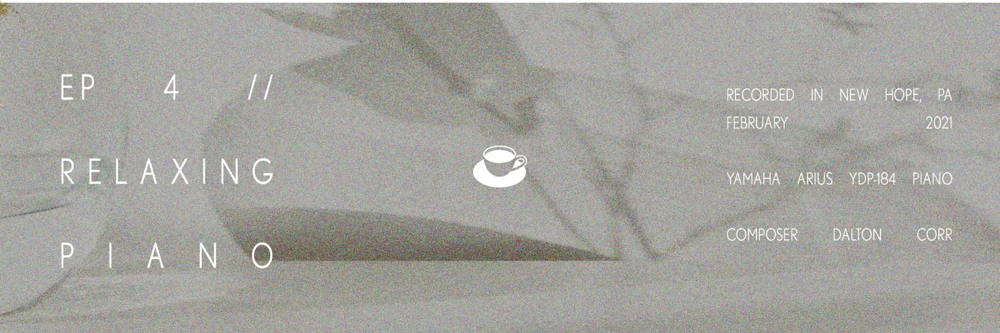
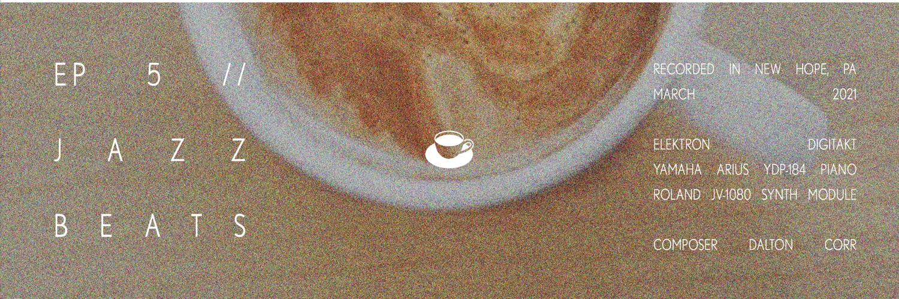
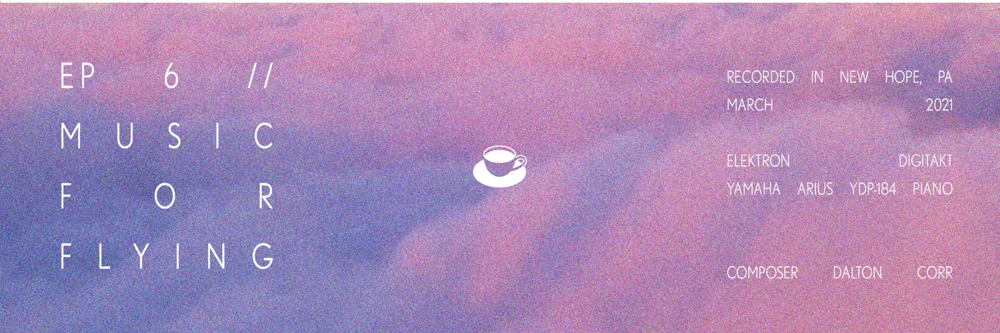
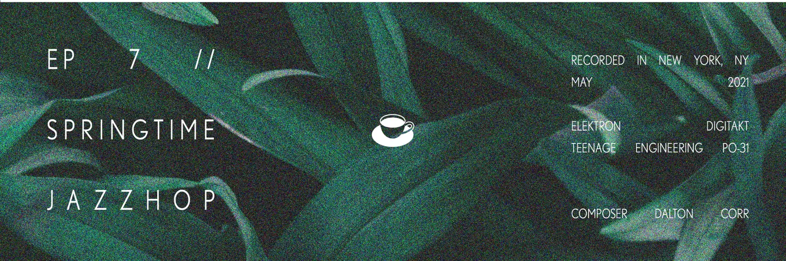
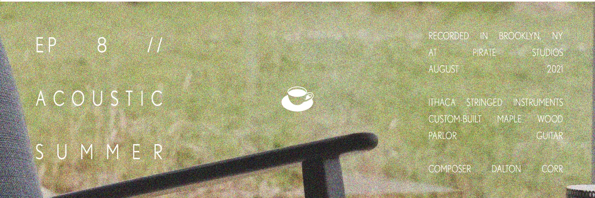
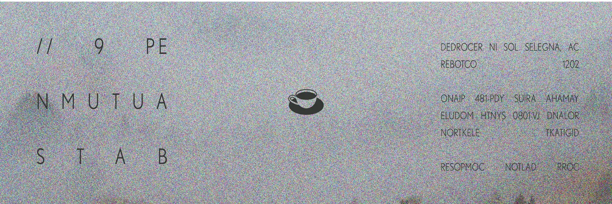
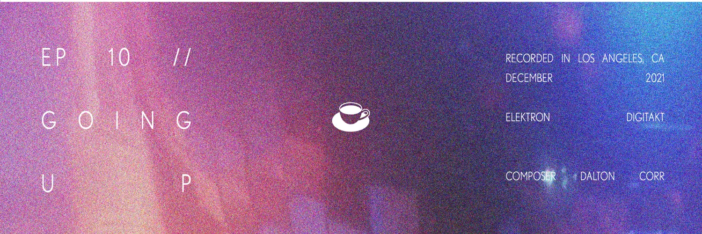
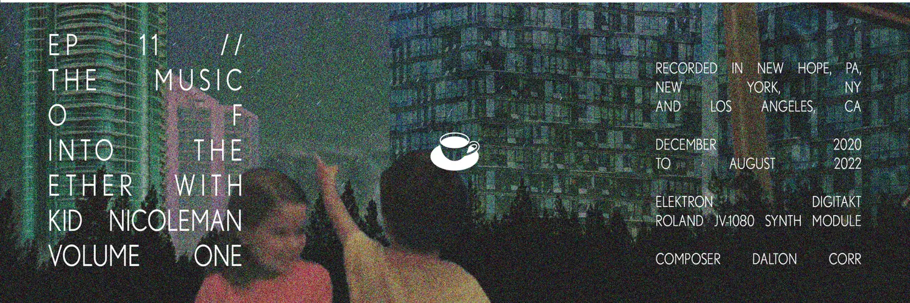
Identity
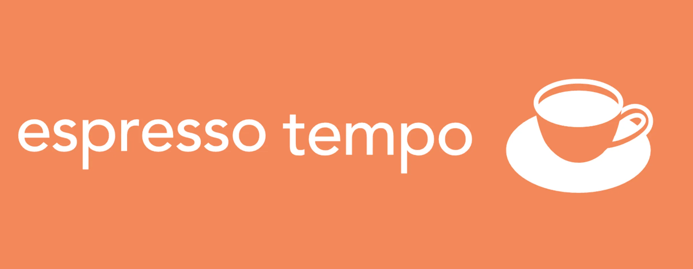
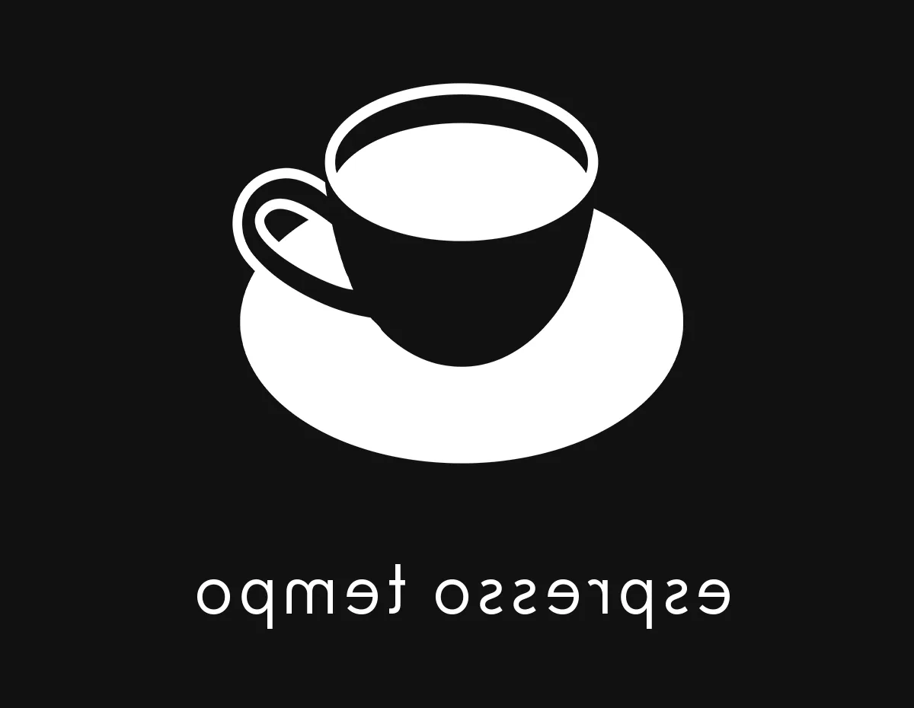
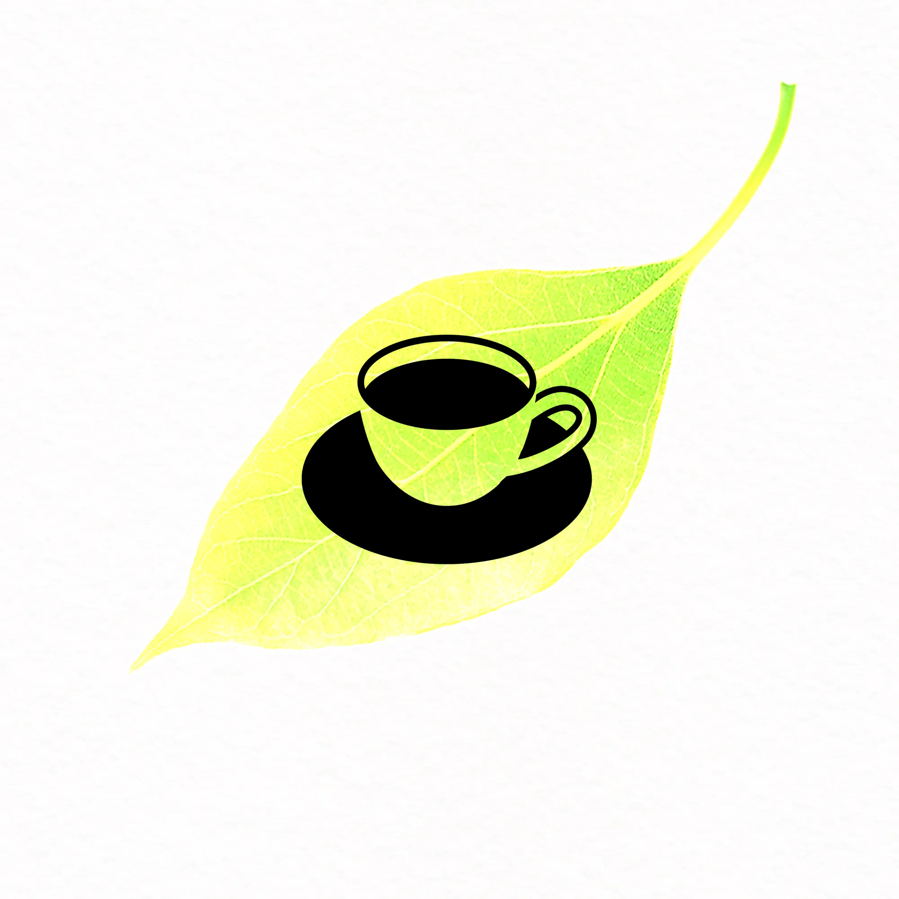
Merch & Ads
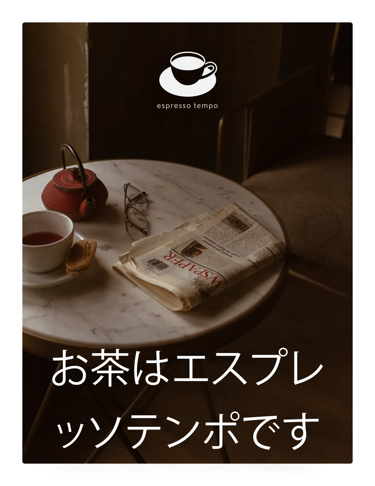
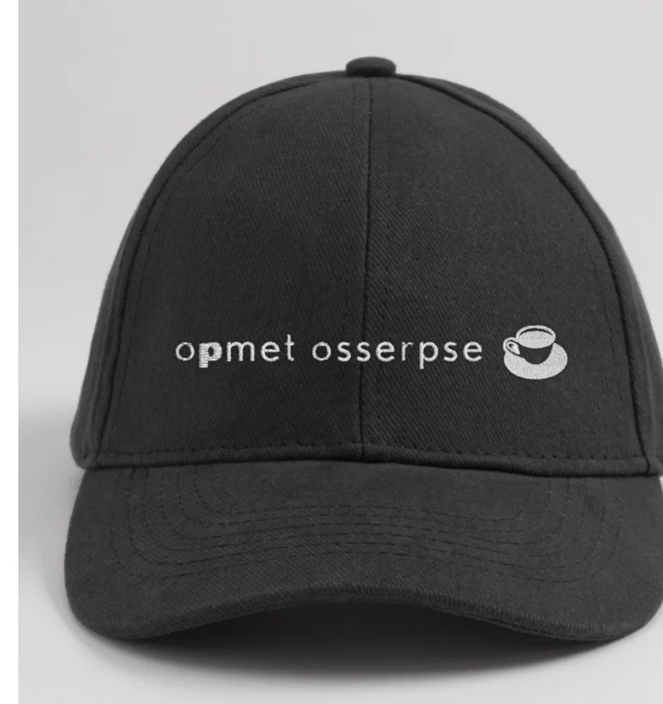